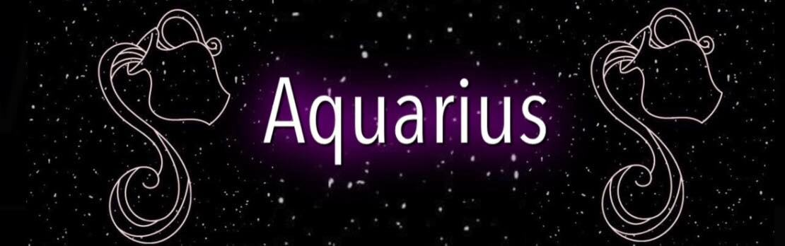
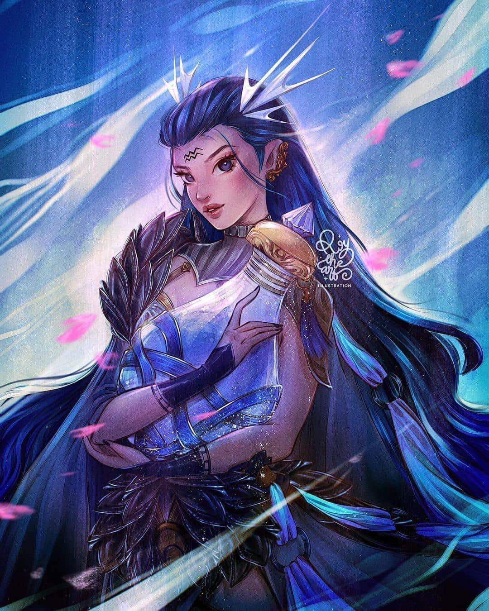

 |
|
Aquarius is the sign different from the rest of the zodiac and people born with their Sun in it feel special. This makes them eccentric and energetic in their fight for freedom, or at times shy and quiet, afraid to express their true personality. In both cases they are deep thinkers and highly intellectual people who love to fight for idealistic causes. They are able to see people without prejudice and this makes them truly special. Although they can easily adapt to the energy that surrounds them, Aquarius representatives have a deep need to have some time alone and away from everything in order to restore power.
Uranus is the ruler of Aquarius, shoulder to shoulder with its traditional ruler � Saturn. Although Uranus has an abrupt, timid, and sometimes aggressive nature, their other ruler often grounds them enough and helps them find enough distance from other people to remain somewhat indifferent. A visionary and someone ready for changes, an Aquarius is a known thinker and someone who will shake your world once they are in it. They feel best as a part of a certain community, but might have trouble finding just the right place where they feel they belong.